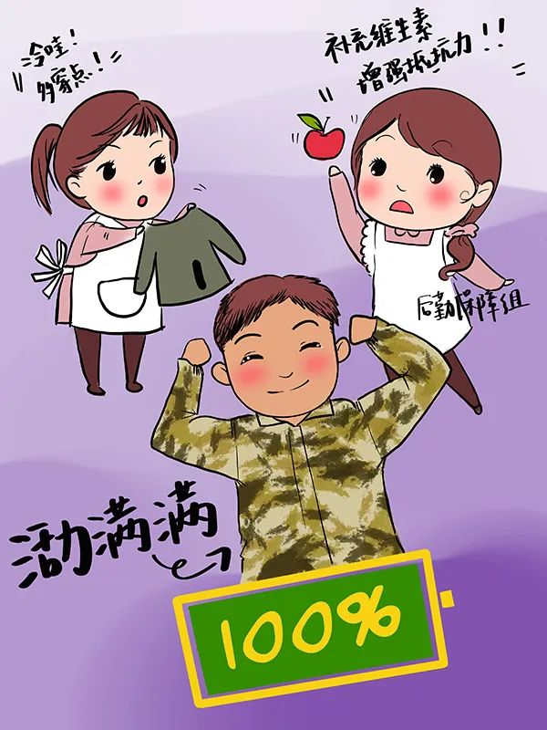
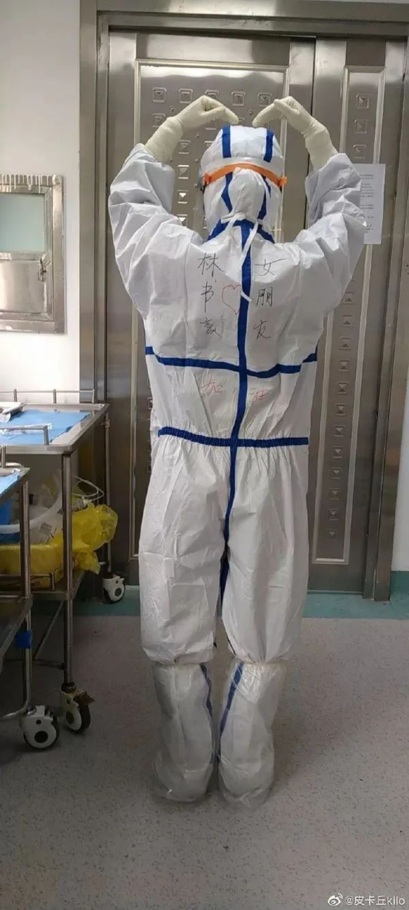
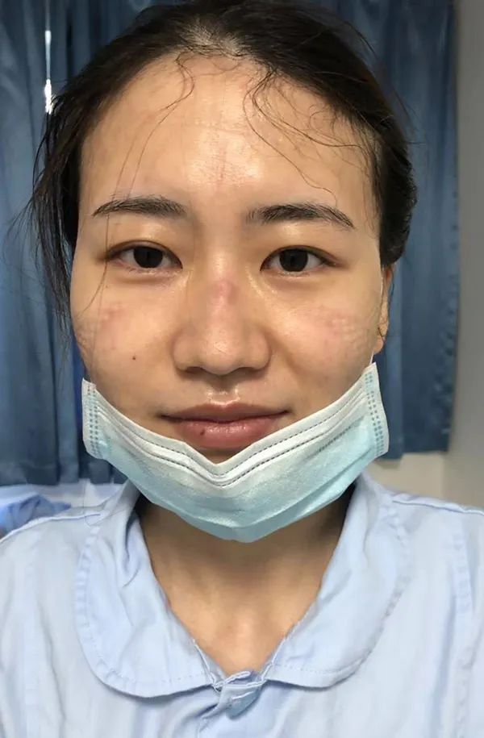
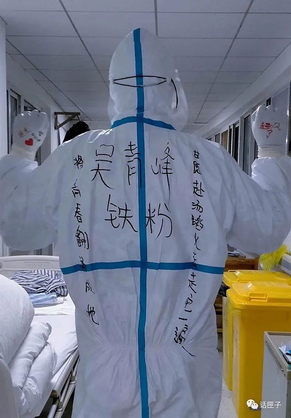

从崩溃到零感染，第一批援助医疗队在黄冈的30天
原文链接 备份链接 每天一条独家原创视频 大年初一，首批驰援湖北的医疗队之一 湖南株洲市中心医院的15人医疗队抵达黄冈。 发现状况令人崩溃： 黄冈当地医护人员天天连轴转， 已经支撑不下去， 防控不到位，医护人员陆续被感染， 床位紧张，住 …
澎湃新闻记者 陈斯斯
来自瑞金医院的90后护士在前线制作了抗疫Vlog。视频来源：受访者 视频剪辑：曾怡文(01:34)

爱看吃播的夏琼华，在武汉抗疫前线身兼数职，其中包括整理隔离病房的垃圾和病人脱下来的衣物。
防护服写着歌词的张俊杰，曾在重症监护室连续工作10多个小时，除了护理工作，还要给他们喂水、喂饭、清理大小便。
而在防护服上写着“林书豪女朋友”的沈妍，走出隔离病房浑身是汗，脸上是深深的口罩印。
他们是上海90后护士，会教病人玩视频软件，会通过画漫画、看吃播、唱歌解压，会在防护服上写上各种文字甚至画画，也许会让人觉得有些另类，但在抗疫中他们很强大。

朱酉琦将自己的漫画作品送给即将出院的病人。
90后“灵魂画手”创作《小笼包遇上热干面》
画漫画，这项技能对许多90后护士来说不在话下。
“热干面别怕，小笼包来了”、“加油！我们都是武汉人”，这是1993年出生的朱酉琦的漫画作品上的文字。
来自上海瑞金医院北院的她，目前在武汉同济光谷医院E3-4隔离病房工作。根据排班，她每次进入隔离病房要4个小时，进去之前穿一套防护服就要半小时，进去后她不能喝水、上厕所，经常穿完就一身汗了，进舱后巡视病房一圈或者发药、发饭、治疗等，中间都要缓一缓，不然就会有些缺氧的感觉。
她回忆说，第一次准备出舱、脱掉防护服弯腰时，有水滴下来，她发现是汗顺着护目镜滴下来了，而整套防护服脱完，基本上她穿在里面的衣服全部湿透。
爱好画画的她把这项技能带到了前线，她的作品被贴在病房窗户上，她还会画一些画，赠送给即将出院的病人。

来自上海市第一人民医院90后护士邹芳草的漫画作品。 本文除署名外，均为受访者供图
“小笼包遇上热干面，一条江系上两座城。”这几天，一张画着上海小笼包与武汉热干面顺利“会师”的原创漫画，在上海市第一人民医院前线医疗队朋友圈里刷屏，“求连载”“求更新”的需求纷至沓来。
漫画原作者正是来自上海市第一人民医院的90后护士邹芳草，她是“隐身”于医疗队的“灵魂画手”。来武汉的前一晚，她在行李箱里带上了画图工具——平板电脑。

90后护士邹芳草画的Q版医疗队队员。
2月19日，抵达武汉雷神山的第一晚，她画了白大褂版和迷彩服版的护士姐姐、医生哥哥Q版“出征照”，没想到从那一晚开始，就一发不可收拾，诸多同事向她“催稿”。
渐渐地，每日更新“插画版”日记，成了邹芳草每天工作结束后的幸福折磨。
“隔离病房内四处可见的白，记录本上密密麻麻的病例文字记录，我希望通过线条的勾勒、色彩的变化能记录下雷神山病房里生动的每一幕，也给我的市一‘战友们’换一种心情，舒缓一下情绪。” 邹芳草说。
在她看来，时间久了，照片就会变成手机相册里的一串数据，只有画下来，才能被记住，成为永恒。

90后护士邹芳草最喜欢的漫画作品《吃豆人》。
每次作画前，她都会在脑海中再次回味一天中印象最为深刻的一件事或一个场景。每日唠叨却又无微不至照顾他们生活的“队妈”“队爸”，穿全套设备时要牢记一百遍的注意事项，变身奥特曼与病毒大战的同事“大白”，纪念市一医疗队在驻地的第一次“巴林特小组”……原本严肃枯燥的每日工作细节，在她笔下变为“走心画作”。
她最喜欢吃豆人这幅画，觉得跟医疗队很像，“吃到豆豆就是治愈患者，为了吃到豆豆要努力躲避小怪兽，就好像我们每天和病魔作斗争却又不能碰到病毒，患者痊愈就是我们的最大胜利。”
为病人下载短视频分散注意力
一件小小的防护衣，也成为90后护士们的“创作地”。
不写自己的名字，也不写来自哪家医院，创意十足的90后有人写上了“热干面加油”，还有人写上了自己的偶像。

90后护士沈妍在自己的防护服上写了“林书豪女朋友”。
90后护士沈妍是上海第一批支援湖北医疗队队员，目前在金银潭医院工作。
尽管隔离病房条件艰苦、排班任务重，还面临被病毒感染的风险，但沈妍很乐观，还在自己的防护服上写上“林书豪女朋友”，给自己加油打气。
2月19日晚上8点多她夜班回家，发了一则微博祈祷“疫情早点结束”，并表示也想去首钢看林书豪打球，同时@林书豪。次日，她看到林书豪转发了自己的微博，激动地告诉朋友，“感觉整个人都晕乎乎的，腰不痛了腿不酸了。”

脱下防护服走出隔离病房的沈妍浑身是汗。
1990年出生的张俊杰，是来自上海胸科医院导管室的男护士，在金银潭医院工作一个多月。他在防护服后写了大大的“吴青峰铁粉”，两旁还配了“甘愿赴汤蹈火去走它一遍”、“将青春翻涌成她”，这两句话出自歌手吴青峰演唱的《起风了》中的一句歌词。
他的工作地点在重症监护室，曾穿着厚重闷热的防护服，连续工作超过10小时。因为没有护工，每个护士需要承担起基础护理之外的很多工作，给病人喂水、喂饭、清理大小便，就连梳头、剪指甲也得依靠护士来完成。

来自上海胸科医院导管室的90后男护士张俊杰，在防护服后写了“吴青峰铁粉”，还写了两句歌词。 微信公众号@话匣子 图
在病床旁张俊杰还帮一位病人下载短视频。“他一下子像发现了新大陆一样，发现这个软件还蛮好用、蛮好玩的，这样一下子分散了他的注意力。”张俊杰说，病人发自内心的快乐，对他来说是一种工作动力。
看吃播解压
“压力其实没什么，没有什么是一顿饭不能解决的，一顿不行，就两顿，没什么过不去的。”这是90后护士夏琼华的口头禅。
夏琼华是瑞金医院肝胆外科的一名护士。对于她来说，相比在上海工作，在武汉同济光谷院区的工作节奏更为紧张，她可以说是身兼数职，每天整理医嘱、帮病人协调各项检查与化验，有时也做院感的工作，消毒舱内外环境。
“别看我的工作琐碎，但其实非常重要，我感觉自己责任比之前更重了，我们的工作主要是架起了隔离病房内外的桥梁，是为了病人护理工作的延续性，在看到病人的化验医嘱，特别是核酸检测和CT检查的医嘱后，我们会通知舱内的护士，帮病人去预约检查，每天下班前还要去盯下这些检查的落实情况，再做好交接班的工作。”夏琼华说。
她的工作还包括整理隔离病房的垃圾、医护人员脱下的工作衣、手术服，至病人脱下来的衣物等。每天上班前，她还要去领取生活物资以及防护物资，谁缺了都管她要，同事们都亲切地喊她“夏阿姨”。
出生于1992年的她，爱好之一就是美食，与家人、朋友聊天或者吃东西是她缓解压力的方式之一，休息时她在酒店还会看看吃播，“想想回去之后要让爸爸给我烧这些那些美食，心情马上就会快乐起来。”

夏琼华准备出征武汉时的照片。
夏琼华还有另外一个爱好唱歌，休息时会在酒店哼两句，还在前线制作了一个抗疫Vlog，Vlog的音乐《相亲相爱》还是自己唱的。对于制作的初衷，她表示：“周围的小伙伴给了自己灵感。”
“我们A组的小伙伴包括瑞金的团队都给我是家人的感觉，有朋友捐赠物品了都会放在我们的‘小超市’共享，我们组长朱琳对我们也像妈妈一样的温暖，有小伙伴生病了她马上调整班表，为小伙伴送上一日三餐，有危险性的操作她都是自己冲在前面，在我们下班累了的时候，组里的小伙伴都讲些笑话与我们分享，还有患者夸我们，这些都让我觉得我们就像一家人。”
夏琼华一直很难忘记病人对自己说过的话：“看不清你们的脸，但是你们的眼睛特别地亮。”

朱酉琦（中间）与同事们在武汉同济光谷医院隔离病房合影。
类似的话，朱酉琦也听到过，“虽然看不清你的脸，但谢谢你们来帮助我。”每每听到这句话，她觉得自己是在做一件非常有意义的事情。
朱酉琦坦言：“以前大家印象里90后都比较娇生惯养，吃不起苦，但我们这个医疗队近一半以上的人都是90后，我作为90后也是一名入党积极分子，在发生疫情时也会责无旁贷，90后可以用行动去证明，自己是能够担得起责任的，保卫自己的祖国，用自己的所学的专业，去阻止疫情的蔓延。”
“我爷爷是老党员，我从小就想向爷爷看齐，家人都很支持我的决定，觉得我应该为这次疫情出一份力。”这是90后护士夏琼华的独白。
戳这里进入
“全国新型冠状病毒感染病例实时地图”↓↓↓
本期编辑 周玉华
推荐阅读


原文链接 备份链接 每天一条独家原创视频 大年初一，首批驰援湖北的医疗队之一 湖南株洲市中心医院的15人医疗队抵达黄冈。 发现状况令人崩溃： 黄冈当地医护人员天天连轴转， 已经支撑不下去， 防控不到位，医护人员陆续被感染， 床位紧张，住 …
原文链接 备份链接 澎湃新闻记者 邓雅菲 实习生 陈紫嘉 32岁的陈凤是湖北省孝感市中心医院儿科的一名护士。2月5日，她与家中1岁的儿子道别，在该院隔离四病区开始了为期14天的“战疫”工作。 “如若是在平时，目前隔离病房的工作根本算不上 …
原文链接 备份链接 摘要：截至2月17日，全国已有3.2万余名医护人员支援湖北，支持湖北实现“应收尽收、应治尽治”。2月7日，其中一支医疗队的领队、复旦大学附属中山医院副院长朱畴文率领的136人队伍奉调入鄂，一天后接管了武汉大学人民医院东 …
原文链接 备份链接 文/六筒 李岩半年前刚去过武汉，和家人去旅游，主要想看看黄鹤楼。那还是夏天，热气蒸得人头上冒烟。高温挡不住蜂拥的游客，摩肩接踵，拥塞的车辆在大道上艰难挪动。“真是个大都市”，她想。 李岩是河北医科大学第二医院呼吸与危重 …
原文链接 备份链接 澎湃新闻综合报道 新冠疫情发生以来，为了方便沟通交流，医护人员在背后写上名字，互相打气。 这些防护服上的字，如无声的誓词。 我们虽然看不见你们的脸庞，却从这些字里看到了希望。 “此行是为救治病人，不达目的不撤兵”——她 …